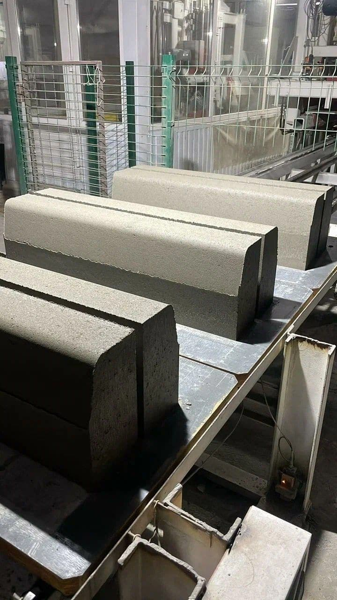
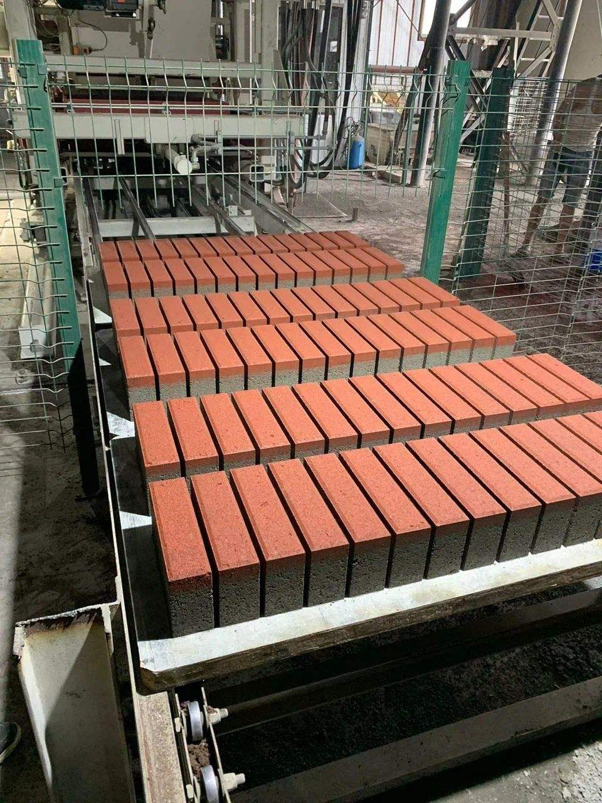
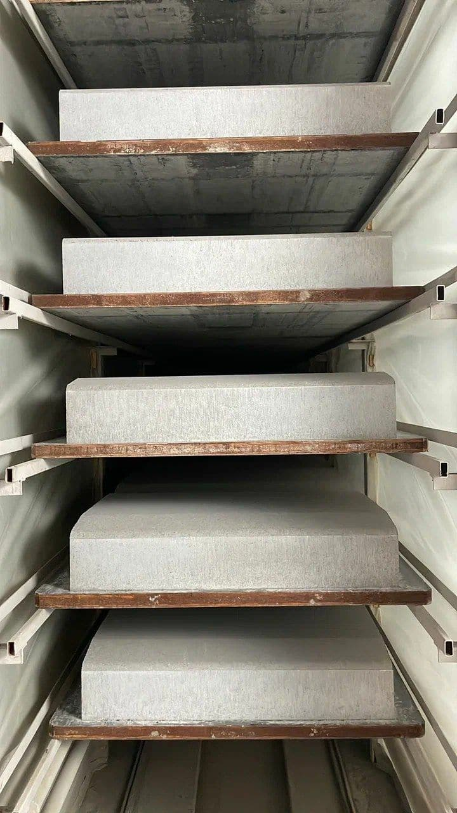
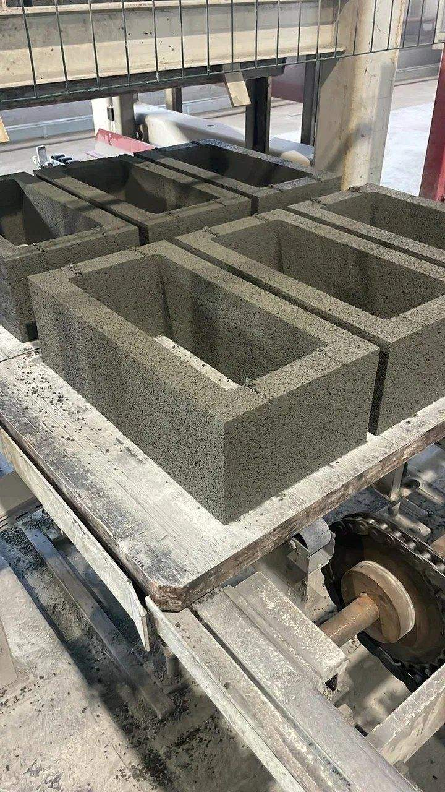
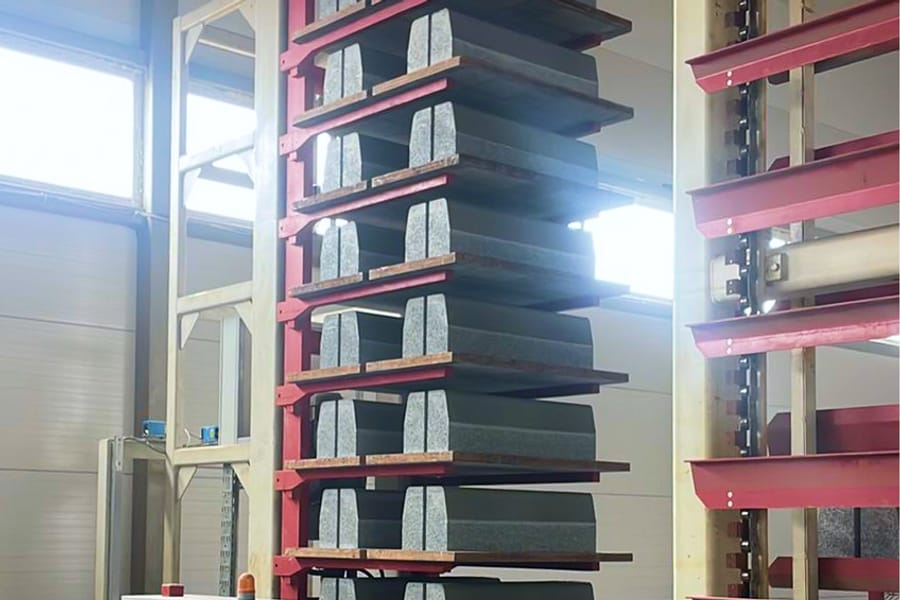

Завод в Артёме:как получается камень
Отсев, цемент и вибрация под давлением. Ниже — передел от смеси до поддона и то, на что это влияет на объекте.
- 9 млнизделий в год
- Hessвибропресс, Германия
- 22позиций в прайсе
Вибропрессование,а не литьё
Изделия формуются на немецком вибропрессе Hess: жёсткая малоподвижная смесь уплотняется вибрацией под давлением пуансона. Воды в такой смеси в разы меньше, чем в литьевой, поэтому изделие выходит плотнее, прочнее по морозостойкости и держит геометрию в допуске стандарта.
Почему это видно на объекте. Плотный вибропрессованный камень меньше впитывает воду, а значит меньше разрушается на циклах замораживания — на приморскую зиму это главный параметр долговечности покрытия.
- Площадка
- г. Артём, ул. Севская, 44
- Оборудование
- вибропресс Hess (Германия)
- Проектная мощность
- 9 млн изделий в год
- Номенклатура
- 22 позиций в прайсе
- Юрлицо
- ООО «МОНТЕ» · ИНН 2502068158
- Отгрузка
- поддонами, самовывоз или доставка
От отсевадо поддона
Смесь
Отсев дробления, цемент, вода и пигмент дозируются на узле. Малоподвижная смесь — основа плотности будущего изделия.
Формовка
Матрица и пуансон задают типоразмер. Вибрация под давлением уплотняет смесь, изделие сразу выходит на поддон.
Твердение
Камера пропарки, затем выдержка на стеллажах до набора отпускной прочности. Только после этого партия идёт на склад.
Отгрузка
Пакетирование на поддоны, погрузка манипулятором или погрузчиком. Самовывоз с площадки или доставка по краю.
Сколько заводможет дать
Лучший товарПриморья 2026
Звание присвоено камню стеновому пустотелому, бордюру дорожному и тротуарному и плитке бетонной тротуарной — письмо Росстандарта № 43/09/2599 от 09.07.2026.
Документы заводаКак этовыглядит





Вопросы о производстве
Чем вибропрессованное изделие лучше литого?
Меньше воды в смеси и уплотнение под давлением дают более плотный бетон: выше прочность и морозостойкость, точнее геометрия. Литые изделия дешевле в оснастке, но на открытой площадке служат меньше.
Можно ли приехать и посмотреть продукцию?
Да, площадка в Артёме на Севской, 44 работает по будням с 9:00 до 18:00. Отгрузку и осмотр партии лучше согласовать заранее по телефону.
Делаете ли изделия по своим размерам?
Пресс формует изделие высотой 25–500 мм в габарите поддона, конкретный типоразмер задаёт сменная матрица. Наличие оснастки, срок и цену подтверждает завод по запросу.